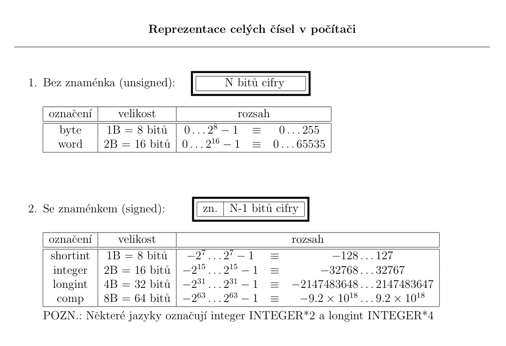
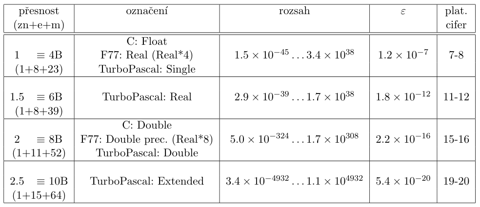
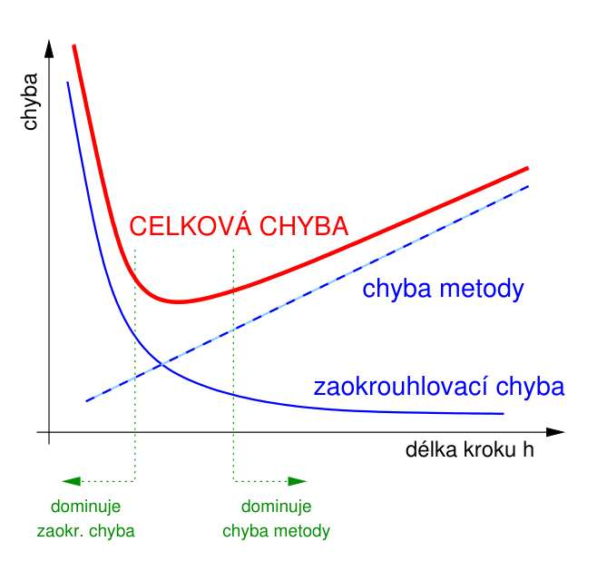

Numerické chyby a stabilita#
V tomto cvičení si ukážeme základy práce s čísly na počítači. Uvidíme, jak lze celá a desetinná čísla reprezentovat v počítači. Dále analyzujeme vznik chyb při počítání s čísly a prozkoumáme (ne)stabilitu numerických metod.
Tyto základy jsou stěžejní při návrhu numerických metod a počítačových algoritmů. Je potřeba mít na paměti, jak se v počítači nakládá s čísly a že to vždy vede k numerickým chybám. Jak uvidíme v této kapitole, v některých případech může matematicky správný postup výpočtu dát numericky (v počítači) zcela chybný výsledek!
import numpy as np
import matplotlib.pyplot as plt
Numerická matematika#
Je věda, která se zabývá řešením matematicky formulovaných úloh pomocí logických operací a aritmetických operací s čísly o konečné délce.
Některé úlohy jsou již formulované tak, že je možné je přímo implementovat v počítači. To jsou typicky úlohy z lineární algebry vyžadující k řešení konečný počet kroků. Naopak spojité úlohy z matematické analýzy nejsou numericky formulované, tedy je nelze přímočaře na počítači vyřešit. V takovém případě je třeba úlohu převést na úlohu numerickou, která původní úlohu aproximuje s určitým řádem přesnosti.
Základním požadavkem je vyřešení úloh s dostatečnou přesností. U metod nás často zajímá konvergence, neboli počet kroků potřebných k dosažený dané přesnosti. U konvergence neuvažujeme zaokrouhlovací chyby, tedy konvergující metoda vyřeší úlohu pro libovolně malý krok \(h \rightarrow 0\) s libovolně vysokou přesností.
Výběr metody závisí vždy na charakteru úlohy. Některé metody můžou být v jistých situacích výhodnější než jiné. Velkou roli také hrají výpočetní a pamětové nároky vybraného algoritmu.
Reprezentace čísel v počítači#
Reprezentace čísel v počítači má zásadní vliv na chyby při výpočtech. Tato podkapitola shrnuje standardizovanou reprezentaci celých a desetinných čísel.
Celá čísla#
Celá čísla jsou v počítači reprezentována přesně. Stejně tak aritmetické operace jsou přesné, ovšem za podmínky, že hodnoty operandů a výsledku jsou ve stanoveném rozsahu. Pokud přesáhne hodnota určitou hranici, dojde k takzvanému přetečení nebo podtečení. U celých čísel je rozsah hodnot výrazně menší a je důležité s ním vždy počítat!

S celočíselnými typy se setkáme v knihovně Numpy, kde každá matice nebo vektor má definovaný typ každého elementu. Defaultně se celá čísla ukládají jako np.int32:
arr = np.array([1, 2, 3, 4])
print(type(arr))
print(arr.dtype)
<class 'numpy.ndarray'>
int32
Kromě standardních typů np.int32 a np.int64 knihovna obsahuje i více-bitové reprezentace (až 256 bitů). Typicky pro numerické účely stačí 64-bitová reprezentace.
Příklady přetečení:
# FACTORIAL
f = 50
a:np.int32 = 1
#a = np.array([5], dtype=np.int32)
for i in range(1,f+1):
a = np.dot(a,i)
print(a)
1
2
6
24
120
720
5040
40320
362880
3628800
39916800
479001600
1932053504
1278945280
2004310016
2004189184
-288522240
-898433024
109641728
-2102132736
-1195114496
-522715136
862453760
-775946240
2076180480
-1853882368
1484783616
-1375731712
-1241513984
1409286144
738197504
-2147483648
-2147483648
0
0
0
0
0
0
0
0
0
0
0
0
0
0
0
0
0
Pokud pracujeme s daty mimo knihovnu Numpy, jazyk python při běžných operacích kontroluje přetečení a při jeho detekci expanduje reprezentaci čísla:
# FACTORIAL - Python flexible integers
f = 50
a:np.int32 = 1
#a = np.array([5], dtype=np.int32)
for i in range(1,f+1):
a = np.dot(a,i)
print(a)
1
2
6
24
120
720
5040
40320
362880
3628800
39916800
479001600
1932053504
1278945280
2004310016
2004189184
-288522240
-898433024
109641728
-2102132736
-1195114496
-522715136
862453760
-775946240
2076180480
-1853882368
1484783616
-1375731712
-1241513984
1409286144
738197504
-2147483648
-2147483648
0
0
0
0
0
0
0
0
0
0
0
0
0
0
0
0
0
Pro numerických výpočty jsou flexibilní typy nevhodné. Výpočet 32 a 64-bitové reprezentace probíhá v procesoru velmi efektivně během jednoho taktu. Zatímco výpočty čísel s více-bitovými reprezentacemi nejsou procesorem hardwarově podporovány a proto jednoduché aritmetické operace trvají několik, klidně desítek taktů! To by příliš zpomalovalo numerickou metodu. Proto budeme vždy pracovat s knihovnou Numpy, která používá jen pevné reprezentace čísel.
Desetinná čísla#
Pro řešení úloh v reálné doméně potřebujeme reprezentovat desetinná čísla. Nejpoužívanější reprezentací je tzv. floating-point uložení desetinných čísel. Floating-point standard definuje základ \(\beta\), exponent \(E\) and přesnost \(p\). Obecně tato reprezentace vypadá následovně:
kde \(d_1.d_2d_3 \dots d_p\) se nazývá mantisa.
Vlastnosti floating-point systému
Nejmenší kladné číslo (může dojít k podtečení)
Největší číslo (může dojít k přetečení)
Strojová přesnost, \(\varepsilon\), je definována jako rozdíl mezi hodnotou 1 a následujícím číslem, které lze uložit v floating-point reprezentaci (lze chápat jako horní odhad relativní chyby způsobené zaokrouhlováním při aritmetických operacích)
Definice speciálních hodnot values: nuly (
-0,+0), nekonečen (-Inf,+Inf), not a number (NaN)

V knihovně Numpy máme opět k dispozici odpovídající typy np.float32 a np.float64 (= double je defaultní).
I dnes se v některých případech se hodí využít typy nižší přesnosti (np.int32 a np.float32), jelikož aritmetické operace jsou s nimi rychlejší, obzvlášt na grafických kartách. Float32 se často používá jako reprezentace v neuronových sítí pro zrychlení trénovacího procesu.
Numpy defaultní floating-point typ:
arr = np.array([1.5, 2.8, 7.9])
print(arr.dtype)
float64
Knihovna Numpy poskytuje podrobné informace ke každému typu:
print(np.finfo(np.float32))
Machine parameters for float32
---------------------------------------------------------------
precision = 6 resolution = 1.0000000e-06
machep = -23 eps = 1.1920929e-07
negep = -24 epsneg = 5.9604645e-08
minexp = -126 tiny = 1.1754944e-38
maxexp = 128 max = 3.4028235e+38
nexp = 8 min = -max
smallest_normal = 1.1754944e-38 smallest_subnormal = 1.4012985e-45
---------------------------------------------------------------
print(np.finfo(np.float64))
Machine parameters for float64
---------------------------------------------------------------
precision = 15 resolution = 1.0000000000000001e-15
machep = -52 eps = 2.2204460492503131e-16
negep = -53 epsneg = 1.1102230246251565e-16
minexp = -1022 tiny = 2.2250738585072014e-308
maxexp = 1024 max = 1.7976931348623157e+308
nexp = 11 min = -max
smallest_normal = 2.2250738585072014e-308 smallest_subnormal = 4.9406564584124654e-324
---------------------------------------------------------------
Chyby ve výpočtech#
Týká se pouze výpočtů s desetinými čísly. Z definice floating-point reprezentace desetinných čísel je jasné, že není možné ukládat libovolné reálné číslo s absolutní přesností. Proto se ve výpočtech vždy objeví chyby. Zároveň provádění aritmetických operací vnese do výsledku další chybu vlivem zaokrouhlování, které je při konečné mantise potřeba.
Základní definice#
Absolutní a relativní chyba
Přesná hodnota: \(x\)
Přibližná hodnota hodnota: \(\tilde{x}\)
Absolutní chyba: \(A(x) = |\tilde{x} - x| \leq a(x)\), kde \(a(x)\) je odhad absolutní chyby
Relativní chyba: \(R(x) = \frac{|\tilde{x} - x|}{|x|} \leq r(x)\), kde \(r(x) \approx \frac{a(x)}{|\tilde{x}|}\) je odhad relativní chyby
Intervalový odhad: \(\tilde{x} - a(x) \leq x \leq \tilde{x} + a(x) \rightarrow x \approx \tilde{x} \pm a(x) \rightarrow x \approx \tilde{x} (1 \pm r(x))\)
Počet platných číslic
Relativní chyba \(R\) odpovídá znalosti \(p\) platných číslic, kde \(p\) je největší celé číslo splňující: \(R \leq 5 \times 10^{-p}\). Přesnosti výpočtů jsou tedy obvykle dané právě relativní chybou.
Zdroje chyb#
Chyby v numerických výpočtech vznikají několika způsoby. V této kapitole se na jednotlivé zdroje chyb podíváme podrobně a ilustrujeme si je na příkladech. Také nás bude zajímat, jak se chyby ve výpočtech mohou šířit a hromadit.
Ve zkratce máme:
Chyby zaokrouhlovací - způsobené konečnou reprezentací čísel v počítači
Chyby metody - vznikají aproximací, kterých se dopouštíme při převádění matematické úlohy na numerickou
Chyby vstupních dat - ztracení přesnosti při uložení desetinných čísel do počítače ve vybrané reprezentaci
Chyby zaokrouhlovací#
Zaokrouhlovací chyby vznikají při ukládání desetinných čísel v počítači a při aritmetických operacích s těmito čísli. Kvůli konečné reprezentaci dochází k mnoha případům a numerickým jevům, které můžou vést k nečekanému zhoršení ale i zlepšení výsledku! Některé zajímavé případy si teď ukážeme.
V pythonu se defautně vypisují čísla zkráceně. Vypsat přesnou hodnotu můžeme následovně:
print(0.1, 0.3)
print(format(0.3, ".55f"))
0.1 0.3
0.2999999999999999888977697537484345957636833190917968750
Jelikož jsou čísla v počítači uložena v binární soustavě, většina desetinných čísel nemá přesnou reprezentaci. Číselný systém s desítkovou bází by toto nevýhodu sice neměl, ale výpočty v binární soustavě jsou výrazně rychlejší na počítači a jdou snadněji hardwarově implementovat.
Chyba reprezentace
Srovnejte následující dvě čísla: \(0.1 + 0.2\) a \(0.3\) pomocí operátoru ==. Co vám vyšlo? Vypište obě čísla zvlášť.
## DOPLŇTE ##
print(0.1 + 0.2 == 0.3, 0.1+0.2, 0.3)
False 0.30000000000000004 0.3
Vidíme, že součet dvou čísel již zanesl do výsledku malou chybu. Více se k tomuto můžete dozvědět zde.
Z předchozí ukázky je zřejmé, že není vhodné používat operátor == na srovnávání desetinných čísel! Vždy použijte < nebo <=, jinak může váš algoritmus dávat špatné výsledky.
Odečítání podobných čísel
Odečítání velmi blízkých čísel není vhodné, jelikož při tom vzniká velká relativní chyba. Dvě blízké čísla budou mít zvelké části stejnou mantisu. Po jejich odečtení dostaneme výsledek na malý počet platných číslic:
Pokud \(x \approx y\), bude rozdíl \(|x \pm y| \approx 0\) a tím pádem relativní chyba bude vysoká. Rozdílem blízkých čísel zesiluje původní chybu.
Uvažujte následující funkci:
pro kterou platí následující chování v okolí \(0\):
Odhadněte limitu přiblížným výpočtem hodnoty funkce \(f(x)\) v bodě \(1.2 \times 10^{-8}\). Je výsledek správný? Pro jaké hodnoty \(x\) dostáváte přesnější hodnotu? Jak se můžeme vyhnout rozdílu blízkych hodnot při výpoču funkce \(f(x)\)?
## DOPLŇTE ##
def f(x):
print(np.cos(x), 1 - np.cos(x), x**2)
return (1 - np.cos(x)) / x**2
print(f(1.2e-8))
0.9999999999999999 1.1102230246251565e-16 1.44e-16
0.7709882115452477
Asociativita
V počítači nemusí platit asiciativita sčítání \((a+b)+c = a+(b+c)\). Ilustrujeme to na následující úloze:
Spočítejte součet členů následující posloupnosti pro \(n=400\) v dopředném a zpětném směru:
Srovnejte výsledky a pokuste se je vysvětlit.
## DOPLŇTE ##
base = 0.9
n = 400
S = 0
for i in range(0,n+1):
S += base**i
print(S)
S = 0
for i in range(n,-1,-1):
S += base**i
print(S)
9.999999999999993
10.000000000000004
Při sčítání řady různě velkých čísel je tedy výhodnější nejdříve sčítat malé čísla a až pak větší. Pro efektivní a zárověň přesnější sčítání čísel lze využít například Kahanův sčítací algoritmus.
Hromadění chyb 1
Na následujícím příkladu uvidíme, že malá chyba se může ve výpočtu postupně nahromadit.
Spočítejte \(x = 0.1 + 0.2 - 0.3\) v dvojité přesnosti (np.float64). Dále chceme 100-krát sečíst hodnotu uloženou v proměnné \(x\) pomocí: \(x = x + x\). Jak byste vysvětlili výsledek?
## DOPLŇTE ##
x:np.float64 = 0.1 + 0.2 - 0.3
print(x)
for i in range(100):
x = x + x
print(x)
5.551115123125783e-17
70368744177664.0
Hromadění chyb 2
Protipříklad hromadění chyb. Může se zdát, že k velkým chybám dochází až při mnoha výpočtech za sebou. Následující ukázka prokazuje opak.
Spočítejte hodnotu \(e = \exp(1) = 2.71828...\) pomocí vzorce \(e = \lim_{n \to \infty}{\left(1 + \frac{1}{n}\right)^{n}}\). Vyhodnoďtě a vypistě přibližnou hodnotu \(e\) pro \(n = 10^k\), kde \(k = {1,2,...,7}\). Také spočítejte relativní chybu. Co pozorujete?
Je potřeba Python donutit počítat ve fixním typu np.float32. Provádějte výpočet za pomocí numpy pole np.array(n, dtype=np.float32).
Může se vám hodit funkce np.logspace(1,7,num=8,base=10).
## DOPLŇTE ##
e = 2.71828
K = 7
for n in np.logspace(1, 7, num=7, base=10):
arr = np.array([n], dtype=np.float32)
x = (1 + 1/arr)**arr
print(x, np.abs(e - x)/e)
[2.593743] [0.04581463]
[2.7048113] [0.00495488]
[2.7170508] [0.00045223]
[2.718597] [0.00011657]
[2.7219622] [0.00135458]
[2.5952268] [0.04526881]
[3.2939677] [0.21178378]
Vzájemné vyrušení chyb
Někdy může dojít k několika chybám během výpočtu, které se v konečném výsledku vyruší. Toho lze využít pro zpřesnění určitých výpočtů.
Máme za úkol implementovat výpočet následující funkce pro libovolné \(x\):
Implementujte následující dva rozdílné algoritmy a spočítejte hodnotu funkce \(f(x)\) pro \(x = 10^{-5}..10^{-16}\):
If (\(x = 0\)) then \(f = 1\); else \(f = \frac{e^{x} - 1}{x}\).
\(y = e^{x}\), If (\(y = 1\)) then f = 1; else \(f = \frac{y - 1}{\log{y}}\).
Který z algoritmů je přesnější? Vypistě hodnotu čitatele a jmenovatele v počítaném podílu. Dokážete vysvětlit větší přesnost jednoho z algoritmů?
np.logspace(-5, -16, num=12, base=10)
array([1.e-05, 1.e-06, 1.e-07, 1.e-08, 1.e-09, 1.e-10, 1.e-11, 1.e-12,
1.e-13, 1.e-14, 1.e-15, 1.e-16])
## DOPLŇTE ##
# 1., 2.
for i in np.logspace(-5, -15, num=12, base=10):
print((np.exp(i) - 1)/i, (np.exp(i) - 1)/np.log(np.exp(i)))
print((np.exp(i) - 1), i, np.log(np.exp(i)))
1.000005000006965 1.0000050000166667
1.000000616442873 1.000000616423623
1.0000000764311845 1.000000075995558
1.0000000062384284 1.000000009369087
0.9999999753484707 1.0000000011550647
0.9999997446031695 1.0000000001424016
0.9999998870652326 1.000000000017556
0.9999996054137743 1.0000000000021643
0.9998187316137019 1.000000000000267
0.9989646455689632 1.0000000000000329
1.012863778612346 1.000000000000004
1.1102230246251565 1.0000000000000004
1.1102230246251565e-15 1e-15 1.110223024625156e-15
Závěr#
Jak jsme viděli, některé operace ve floating-point aritmetice nejsou přesné. Obecně neplatí komutativita, asiciativita a distributivita. Je dobré mít zejména na paměti následující:
Přesto existují operace, které jsou přesné:
Chyby se v postupných výpočtech šíří. V některých případech se můžou odečítat, někdy naopak zesilovat nebo hromadit!
Šíření chyb Chyby se v numerických výpočtech mohou šířit více způsoby. Může docházet k hromadění i k odečítání chyb. Obecně, při opakovaném provádění určité operace nám chyba může růst:
lineárně \(O(N \epsilon)\) - chyby mají stejné znaménko
s odmocninou \(O(\sqrt{N \epsilon})\) - známenko chyb je náhodné, celková chyba je úmerná jejich varianci
Čemu se zejména vyhnout, abychom minimalizovali zaokrouhlovací chyby?
odčítání blízkých čísel
odečítaní i sčítání čísel velmi odlišných řádů
Chyby metody#
V případě kdy řešíme úlohu, která v matematické formulaci vyžaduje k vyřešení nekonečný počet kroků, nedokážeme napsat přesný algoritmus. Při převedení na numerickou úlohu se budeme muset dopustit jisté aproximace, aby bylo možné řešení spočítat v konečném počtu kroků.
Typycky výsledná numerická metoda je jistého řádu, určující závislost chyby metody na počtu kroků.
Big-O notace
Tato notace ukazuje řádovou závislost chyby na jistém rozměru úlohy (velikost kroku numerické metody).
Definice:
přávě tehdy když
Tedy big-O notace vyjadřuje, že chyba v určité limitě (\(x\) jdoucí k \(a\), většinou \(a = 0\) nebo \(a = \infty\)) nepřekročí hodnotu funkce \(g\), až na konstantu \(M\).
Uvažujme následující úlohu využívající poznatky z matematické analýzy - Taylorův rozvoj funkce:
\(f(x)=\sum_{n=0}^{\infty}\dfrac{f^{(n)}(a)}{n!}(x - a)^{n} = \sum_{n=0}^{\alpha-1}\dfrac{f^{(n)}(a)}{n!}(x-a)^{n} + O((x-a)^{\alpha})\)
nahrazením \(h \equiv x - a\)
\(f(a+h)=\sum_{n=0}^{\infty}\dfrac{f^{(n)}(a)}{n!}h^{n} = \sum_{n=0}^{\alpha-1}\dfrac{f^{(n)}(a)}{n!}h^{n} + O(h^{\alpha})\)
Řád metody \(\alpha\): chyba je úměrná \(h^{\alpha}\)
Doplňte kód do funkce exp_taylor(x,N), která má spočítat Taylorův rozvoj exponenciální funkce v bodě \(a=0\) (Maclaurinova řada):
pro obecné \(x\) s využitím prvních \(N\) členů řady.
Vykreslete do jednoho grafu funkci \(e^x\) a aproximaci funkce \(f(x)\) na intervalu \([-1, 1]\) pro \(N = 2,3,4\).
Spočítejte absolutní a relativní chyby v tomto intervalu a vykreslete do druhého grafu. Najděte maximum chyby.
Pro vyhodnocení faktoriálu můžete použít funkci np.math.factorial.
Napadá vás, jak aproximovat funkci \(e^x\) na celé množině reálných čísel \(\mathbb{R}\) přesněji (s menší relativní chybou) ?
## DOPLŇTE ##
def exp_taylor(x, N):
fx = 0
for n in np.arange(0, N):
fx += x**n / np.math.factorial(n)
return fx
plt.figure(figsize=(15,5))
plt.subplot(131)
xx = np.linspace(-1, 1, 100)
fe = np.exp(xx)
plt.plot(xx, fe, 'k-', label=r'$e^x$')
plt.subplot(132)
plt.title('absolutní chyba')
plt.subplot(133)
plt.title('relativní chyba')
for i in range(2,4+1):
ff = exp_taylor(xx, N=i)
plt.subplot(131)
plt.plot(xx, ff, label=f'stupeň {i}')
abs_err = np.abs(fe - ff)
rel_err = abs_err / np.abs(fe)
plt.subplot(132)
plt.plot(xx, abs_err)
plt.subplot(133)
plt.plot(xx, rel_err)
plt.subplot(131)
plt.legend();
Vylepšená aproximace \(e^x\) na \(\mathbb{R}\)
Taylorův rozvoj funkce aproximuje danou funkci pouze na okolí zvoleného budu. Na aproximaci celé funkce to nestačí.
Co takhle použít Taylorův rozvoj v různých bodech? To se v případě funkce \(e^x\) dostaneme do problémů, protože pro výpočet členů rozvoje v bodě \(a \neq 0\) potřebujeme znát hodnotu \(e^a\), což se právě snažíme spočítat!
My si zde ukážeme malé vylepšení, které již umožní získat hodnotu exponenciální funkce na celé množině \(\mathbb{R}\) s rozumnou přesností. V praxi se používá ještě o několik kroků sofistikovanější algoritmus. Více se můžete dozvědět zde.
Vylepšení spočívá v následujícím triku:
kde \(x = n \ln{2} + x^{\prime}\). Hodnotu \(x\) jsme tedy rozdělili celočíselný násobek \(\ln{2}\), která je nejblíže hodnotě \(x\):
Spočítat \(2^n\) je v počítači triviální (n-krát bitový posun 1) a \(e^{\prime}\) lze spočítat Taylorem, jelikož \(x{\prime}\) je rozumně blízko 0. Tímto trikem jsme výrazně zlepšili přesnost aproximace exponenciální funkce tím, že jsme redukovali maximální hodnotu (\(|x^{\prime}| \leq \frac{\ln(2)}{2}\)) použitou v Taylorově řadě. Jak si ukážeme v následující ukázce, relativní chyba neporoste pro rostoucí \(|x|\):
np.log(2)/2
0.34657359027997264
Implementujte vylepšenou verzi aproximace exponenciální funkce podle předešlého popisu.
Využijte řešení předchozí úlohy pro vyhodnocení \(e^{x^{\prime}}\).
## DOPLŇTE ##
def exp_aproximace_na_r(x, N):
n = np.round(x / np.log(2))
x_zbytek = x - n * np.log(2)
exp_zbytek = exp_taylor(x_zbytek, N) # exp(x')
#print(n, x_zbytek, exp_zbytek)
return 2**n * exp_zbytek
plt.figure(figsize=(15,5))
plt.subplot(131)
xx = np.linspace(-15, 15, 100)
fe = np.exp(xx)
plt.plot(xx, fe, 'k-', label=r'$e^x$')
plt.subplot(132)
plt.title('absolutní chyba')
plt.subplot(133)
plt.title('relativní chyba')
for i in range(1,3+1):
ff = exp_aproximace_na_r(xx, N=i)
plt.subplot(131)
plt.plot(xx, ff, label=f'stupeň {i}')
plt.subplot(132)
abs_err = np.abs(fe - ff)
plt.plot(xx, abs_err)
plt.subplot(133)
rel_err = abs_err / np.abs(fe)
plt.plot(xx, rel_err)
plt.subplot(131)
plt.legend();
Vztah chyb
Je dobré mít na paměti, že i když teoreticky může s menším krokem jít chyba metody k nule, vždy se budou ve výpočtu vyskytovat chyby zaokrouhlovací! Vzájemný vztah těchto dvou chyb ilustruje následující obrázek:

Chyby vstupních dat#
Vstupní data jsou hodnoty, které vkládáme do počítače. Při jejich uložení již dojde ke zaokrouhlovací chybě, která již může způsobit chybný výsledek.
Implementujte metodu, která najde všechna řešení kvadratické rovnice:
Najděte kořeny pro \(a = 1/3, b = \sqrt{4*7*1/3}, c = 7\). Funguje vaše metoda správně? Kolik nalezla kořenů?
## DOPLŇTE ##
def kvad_koreny(a,b,c):
D = b**2 - 4*a*c
print(D)
if (D > 0):
return (-b + np.sqrt(D))/(2*a), (-b + np.sqrt(D))/(2*a)
elif (D < 0):
return None
else:
return -b/a
#b**2 = 4*a*c
print(kvad_koreny(1/3, np.sqrt(4*7*1/3), 7))
1.7763568394002505e-15
(-4.582575631735567, -4.582575631735567)
Stabilita#
Numerická metoda může za uřčitých podmínek zesilovat zaokrouhlovací chyby, které se vyskytnou zejména z počátku výpočtu. Takovým metodám se říká nestabilní. Tyto metody by teoreticky fungovali na ideálním počítači bez existence zaokrouhlovacích chyb. U takových metod nepomůže snížit krok.
Podmíněnost úlohy
Podmíněnost úlohy nám říká, jestli samotný charakter řešeného problému nevede k zesilování chyb.
Definice: Podmíněnost úlohy \(C_p\) je daná poměrem relativní změny výsledku ku relativní změně vstupních dat:
Jinak řečeno, malá chyba ve vstupních datech je zesílena (vynásobena) číslem \(C_p\) v konečném řešení úlohy.
Rozlišujeme:
\(C_p \sim 1\) - dobře podmíněná úloha
\(C_p \geq 100\) - špatně podmíněná úloha
Na následujícím příkladu si ukážeme jeden typ nestabilní metody:
S využitím jednoduché přesnosti (np.float16) spočítejte prvních 20 mocnic zlatého řezu:
Použijte následující rekurentní vzorec \((\phi^{0} = 1, \phi^{1} = \phi)\):
Porovnejte s hodnotami vypočtenými přímým umocněním. Vykreslete do grafu jak hodnoty, tak relativní chybu.
## DOPLŇTE ##
phi = (np.sqrt(5) - 1) / 2
print(phi)
N = 20
phis = np.zeros(N, dtype=np.float16)
phis2 = np.zeros(N, dtype=np.float16)
phis[0] = 1
phis[1] = phi
phis2[0] = 1
phis2[1] = phi
for i in range(2, N):
phis[i] = phis[i-2] - phis[i-1]
phis2[i] = phi**i
plt.figure(figsize=(12,5))
plt.subplot(121)
plt.plot(phis, '.-', label='odčítání')
plt.plot(phis2, label='násobení')
plt.legend()
plt.subplot(122)
plt.plot(np.abs(phis2-phis)/np.abs(phis2), '.-')
plt.yscale('log')
plt.title('relativni chyba');
0.6180339887498949
Rekurentní vztah pro výpočet zlatého řezu má 2 řešení: \(\frac{\sqrt{5} \pm 1}{2}\). Jelikož druhé řešení je vetší než 1, libovolně malá chyba vzniklá zaokrouhlováním exponenciálně poroste (v každé iteraci se vynásobí druhým řešením).
S nestabilními metodami se znovu setkáme v kapitole řešení ODR.
Ukázky z praxe#
Chyby při arimetických výpočtech v počítačích mohou mít své důsledky [1, 2]. V praxi jsou důležité nejen fyzikální jednotky [3], ale i numerická robustnost algoritmů.
S poznatky této kapitoly se budeme setkávát v následujících hodinách, kde uvidíme jejich důsledky při konstrukci a aplikaci různých metod numerické matematiky.